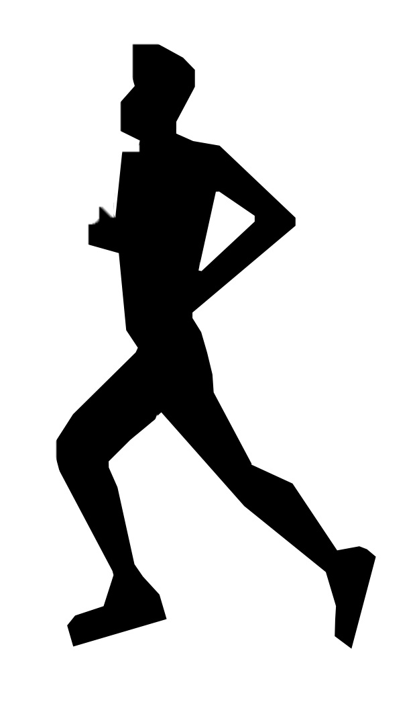
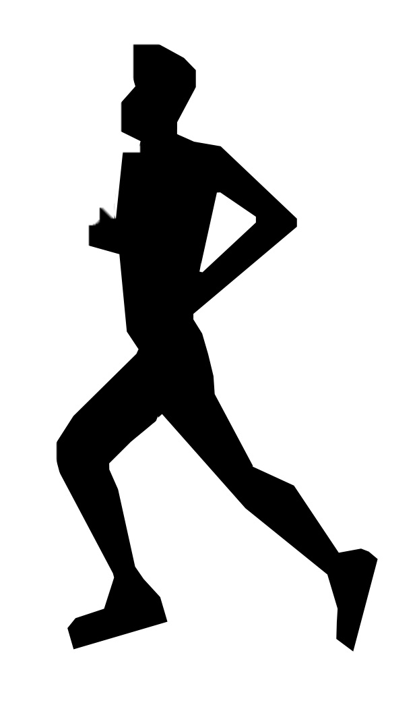
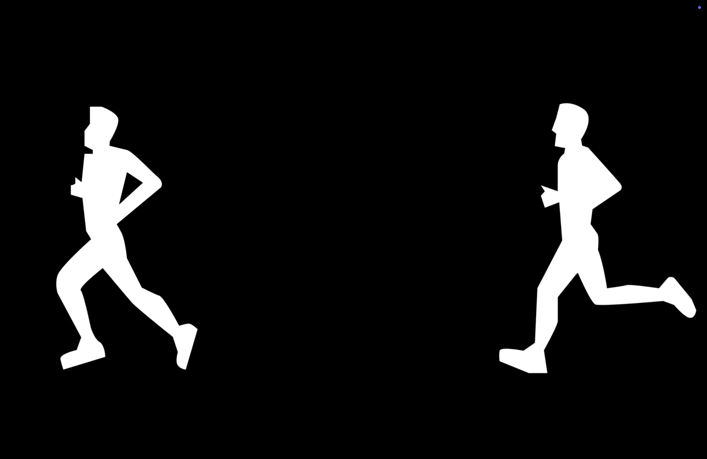
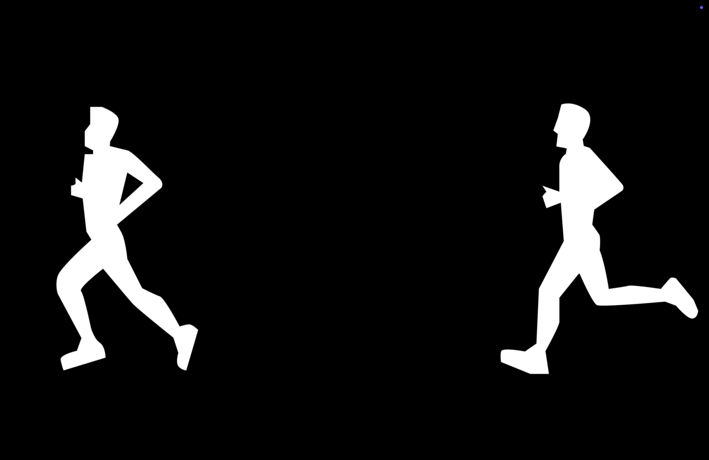

'HOOLIGANG'
Motion Graphic
A kinetic typography project assigned as a first-year introduction to After Effects to the song 'HOOLIGANG' by Joey Valence & Brae.
Purpose
Course project
Tools
After Effects, Illustrator
Timeline
Nov 2024
Role
Motion, Graphics
Team
Solo
Objective
An original motion graphic animation that interprets a dialogue clip through kinetic typography, combining design principles, movement, and self-created visuals to craft a rhythm based visual experience.
Design Process
1. Research & Ideation
The process started with sketching out keyframes and planning out how the scenes/objects would move together cohesively from frame to frame.
Font
'cityburn' typeface used for all text.
(afterthought: I wish I utilized a variety of font types, since only having one font gets repetitive throughout the video)
Graphics
 


Colour Palette
- Pulls inspiration from music/skateboarding posters, which use black and white with a pop of color.
- This inspiration was pulled to help create a street-style, bouncy, and vibrant style of song.
2. Outcome

 
